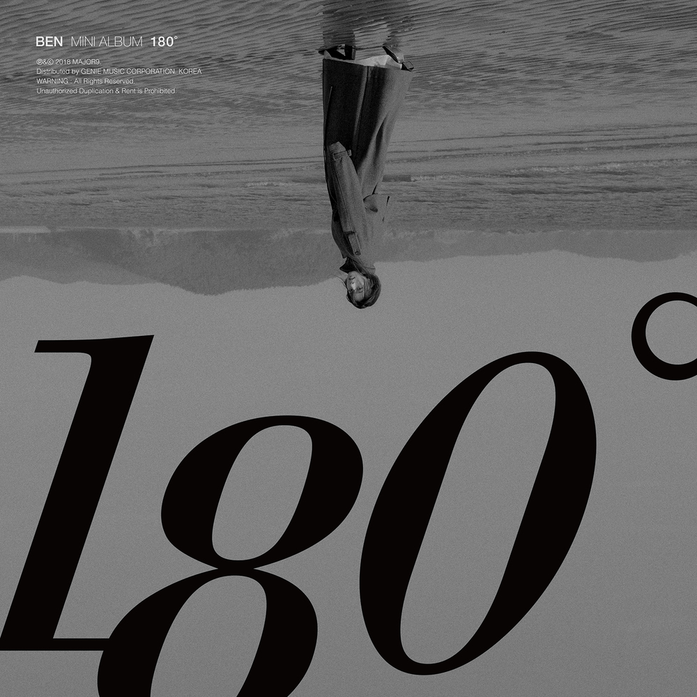

안녕하세요, 라보엠입니다.
오늘은 벤(BEN)의 대표곡 ‘180도’를 소개해드리겠습니다. 2018년 겨울, 미니앨범 [180˚]의 타이틀곡으로 발표된 이 곡은 벤 특유의 애절한 감성과 폭발적인 고음, 그리고 섬세한 감정선이 어우러진 발라드입니다. 사랑의 시작과 끝, 그 사이에서 느끼는 변화와 아픔을 담아낸 ‘180도’는 많은 이들에게 깊은 공감과 위로를 전해주고 있습니다.

벤 180도 - 사랑의 온도차, 그리고 달라진 표정
벤의 ‘180도’는 42인조 오케스트라의 풍성한 사운드와 벤의 맑고 애잔한 목소리가 어우러져, 곡의 감정선을 극대화합니다. 절제된 피아노와 스트링, 그리고 후반부로 갈수록 고조되는 멜로디는 듣는 이의 마음을 깊이 파고듭니다. 특히 벤의 고음은 곡의 클라이맥스에서 폭발적으로 터지며, 이별의 아픔을 더욱 진하게 전달합니다. 실제로 이 곡은 고음 음역이 계속 유지되어, 노래방에서 부르기 까다로운 곡으로도 유명합니다.
앨범 [180˚]는 벤이 소녀에서 여인으로 성장하는 과정을 담아낸 작품이기도 합니다. 사랑의 시작과 끝, 그 각각의 감정들이 가진 아프지만 아름다운 기억을 노래에 담아, 이별의 순간조차도 괜찮은 추억으로 남길 바라는 벤의 마음이 느껴집니다. ‘180도’는 이별 노래를 넘어, 사랑이 변해가는 과정을 담담하게 받아들이는 성숙함을 보여줍니다.
‘180도’는 이별을 겪는 모든 이들에게 깊은 공감과 위로를 전하는 노래입니다. 사랑이 변해가는 것이 어쩌면 자연스러운 일임을, 그리고 그 변화 속에서도 자신을 지키는 것이 중요하다는 메시지를 조용히 건넵니다. “이젠 너무나도 그리워진 그때 너와 나”라는 마지막 구절은, 지나간 사랑에 대한 아련한 그리움과 함께, 앞으로 나아갈 용기를 전해주고 있습니다.
가사에 담긴 이별의 아픔
사랑 다 비슷해 그래 다 비슷해
너는 다르길 바랐는데
넌 뭐가 미안해 왜 맨날 미안해
헤어지는 날조차 너는 이유를 몰라
이젠 180도 달라진
너의 표정 그 말투
너무 따뜻했던 눈빛 네 향기까지도
정말 너무나도 달라진
우리 사랑 또 추억
아직 그대로인데 난
이젠 180도 변해버린 지금 너와 나
남자는 다 비슷해 그래 다 비슷해
너는 아니길 바랐는데
말로만 사랑해 거짓말 그만해
헤어지는 날조차 왜 넌 이유를 몰라
이젠 180도 달라진
너의 표정 그 말투
너무 따뜻했던 눈빛 네 향기까지도
정말 너무나도 달라진
우리 사랑 또 추억
아직 그대로인데 난
이젠 180도 변해버린 지금 너와 나
사랑해 말하지 않아도
너의 눈에 쓰여 있었던
그때가 참 그리워
이젠 180도 변해버린 너와 나의 약속
익숙해진 변명 거짓말까지도
모두 진심이라 믿었던
바보 같던 내 사랑
전부 지쳐버렸어 난
이젠 180도 변해버린 지금 너와 나
이젠 너무나도 그리워진
그때 너와 나
‘180도’는 뜨겁던 사랑이 서서히 식어가며, 결국 이별로 향하는 과정을 담담하게 그려냅니다. “이젠 180도 달라진 너의 표정, 그 말투, 너무 따뜻했던 눈빛, 네 향기까지도 정말 너무나도 달라진 우리 사랑”이라는 가사처럼, 한때는 모든 것이 특별했던 연인의 모습이 이제는 낯설게만 느껴지는 순간을 노래하고 있습니다. 사랑이 변해가는 과정을 여자의 시선에서 섬세하게 풀어낸 점이 이 곡의 가장 큰 매력입니다.
이 곡의 가사는 이별을 받아들이기 힘든 마음, 그리고 아직 남아 있는 미련과 그리움을 솔직하게 드러냅니다. “사랑 다 비슷해, 그래 다 비슷해, 너는 다르길 바랐는데”라는 구절에서는, 누구나 한 번쯤 겪어봤을 사랑의 허무함과 아쉬움이 느껴집니다. “모두 진심이라 믿었던 바보 같던 내 사랑, 전부 지쳐버렸어”라는 후렴구는, 더 이상 붙잡을 수 없는 사랑 앞에서 느끼는 무력감과 슬픔을 고스란히 전합니다.
맺음말
벤의 ‘180도’는 사랑의 시작과 끝, 그리고 그 사이의 모든 감정을 섬세하게 담아낸 명곡입니다. 벤의 진솔한 목소리와 깊은 감성이 어우러진 이 곡은, 이별의 아픔을 겪는 이들에게 작은 위로와 공감이 되어줍니다. 오늘 하루, ‘180도’를 들으며 지나간 사랑과 지금의 마음을 다시 한 번 돌아보는 시간을 가져보는 건 어떨까요? 이 곡이 여러분의 하루에 따뜻한 위로가 되길 바랍니다.
관련노래
[지금이노래] 벤 한 편의 영화 같은 널 사랑했어 노래 가사
안녕하세요 라보엠입니다.슬픈 노래 제조기 벤의 신곡이 발표되었습니다. 한 편의 영화같은 널 사랑했어라는 제목으로 호소력 짙은 목소리와 슬플 가사로 듣는 사람들에게 아련한 감정을 전달
umm.la-bohe.me